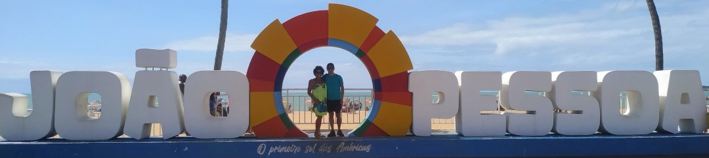
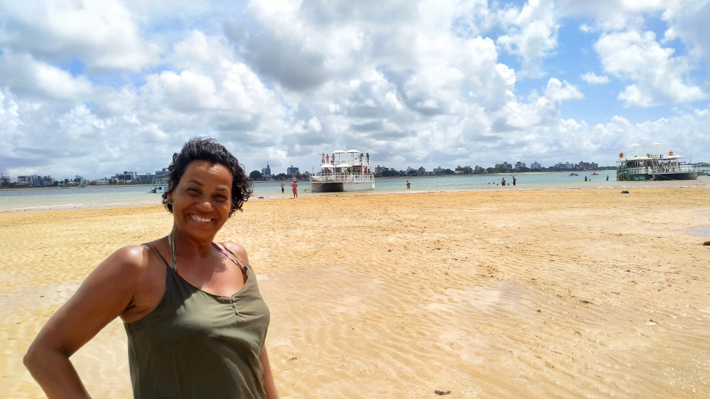
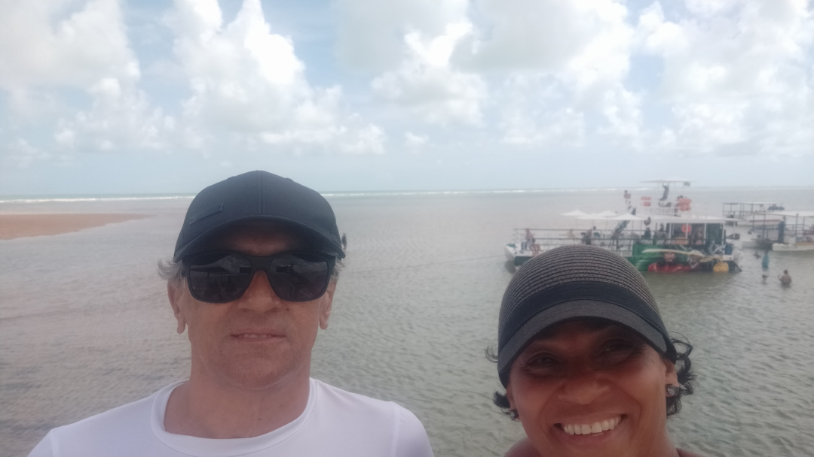
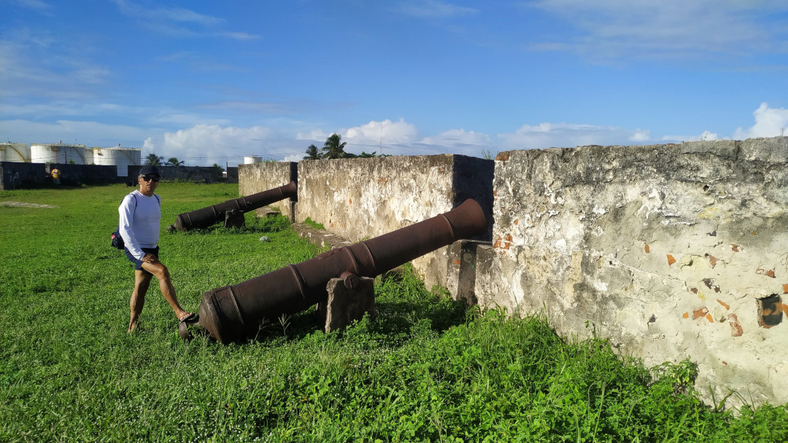
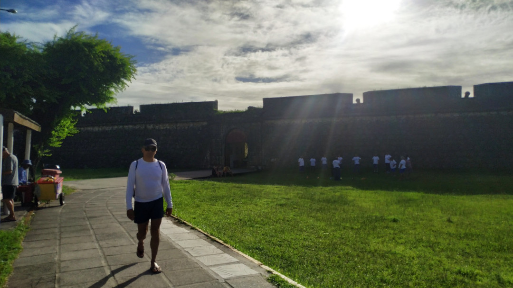

O último roteiro da viagem programada de férias de 2024. Depois de Fortaleza e várias regiões do estado do Ceará, retornamos para Fortaleza. Depois, seguimos para Natal, RN, e finalmente chegamos em João Pessoa, PB. Programamos para ficar apenas 5 dias. Com tantas opções de passeios, é evidente que 5 dias não são suficientes, mas valeu muito a pena. Fomos em vários atrativos interessantes e belíssimos.

Ilha de Areia Vermelha


Embarcamos em um catamarã para a Praia de Camboinha até a Ilha de Areia Vermelha: um espetáculo da natureza, com bancos de areia e arrecifes naturais. Ficamos um bom tempo relaxando nas águas cristalinas e aproveitando a tranquilidade do local.
Fortaleza de Santa Catarina


A Fortaleza de Santa Catarina, localizada em Cabedelo, próximo a João Pessoa, é um dos patrimônios históricos mais antigos do Brasil. Construída em meados do século XVI, a fortaleza foi erguida com o objetivo de proteger o litoral da Paraíba dos ataques de invasores holandeses e franceses. Saiba mais.